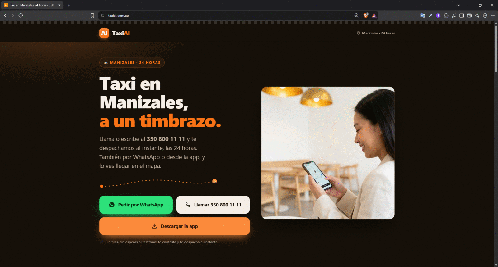
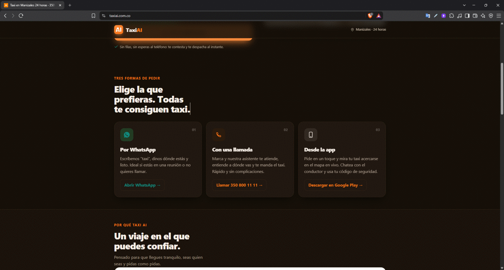
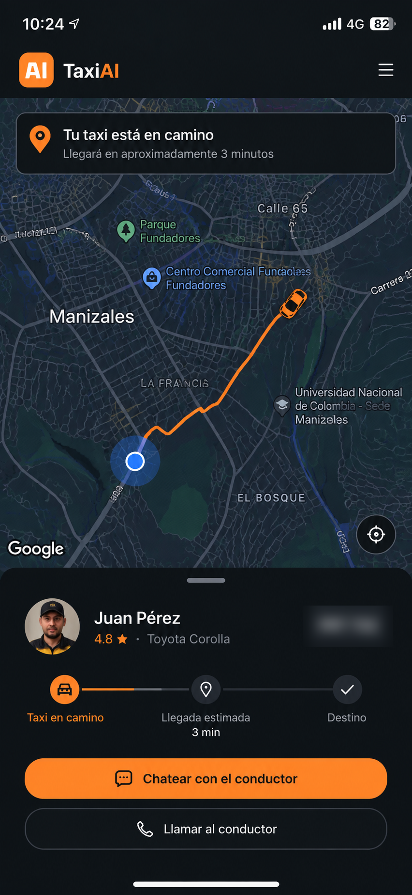
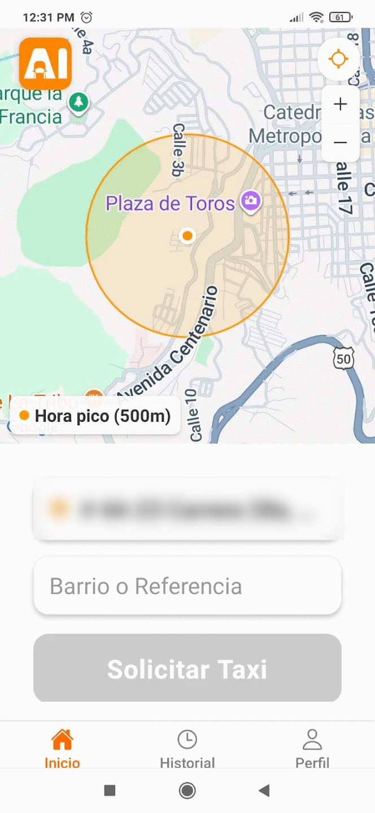
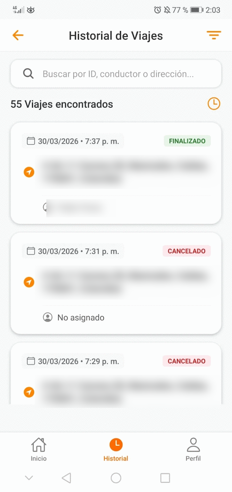
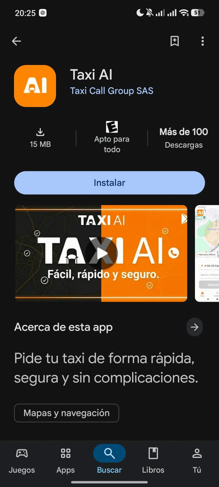
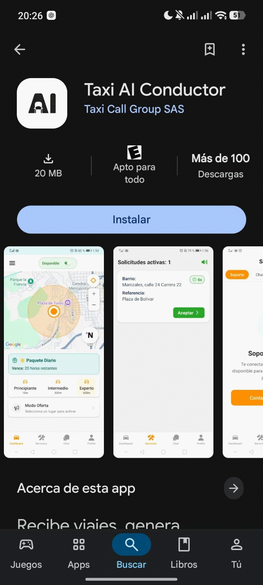

Capturas








Una empresa de taxis despachaba a mano todas las llamadas. Construí el sistema que atiende la llamada, entiende la dirección hablada del pasajero y asigna un conductor sin que intervenga un operador. También las dos apps móviles, la landing y el panel de operación.
Cliente
Taxi Call Group S.A.S.
País
Colombia
Rol
Diseño, construcción y operación
Estado
En producción · mantenimiento continuo
La central recibía decenas de miles de llamadas por mes y cada una la atendía una persona: escuchaba la dirección, la ubicaba y llamaba por radio a un conductor. El cuello de botella era humano y no escalaba.
conductores
llamadas por mes
reservas por mes
menos trabajo manual
Las cifras de operación son datos informados por el cliente.






